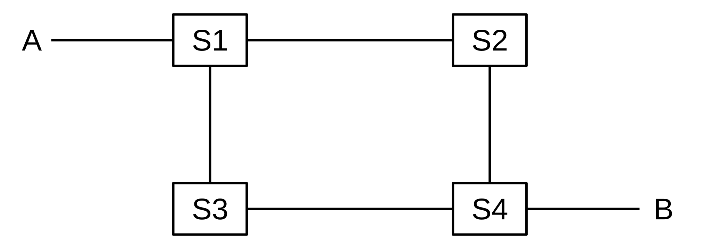

1 An Overview of Networks¶
Somewhere there might be a field of interest in which the order of presentation of topics is well agreed upon.
Computer networking is not it.
There are many interconnections in the field of networking, as in most technical fields, and it is difficult to find an order of presentation that does not involve endless “forward references” to future chapters; this is true even if – as is done here – a largely bottom-up ordering is followed. I have therefore taken here a different approach: this first chapter is a summary of the essentials – LANs, IP and TCP – across the board, and later chapters expand on the material here.
Local Area Networks, or LANs, are the “physical” networks that provide the connection between machines within, say, a home, school or corporation. LANs are, as the name says, “local”; it is the IP, or Internet Protocol, layer that provides an abstraction for connecting multiple LANs into, well, the Internet. Finally, TCP deals with transport and connections and actually sending user data.
This chapter also contains some important other material. The section on datagram forwarding, central to packet-based switching and routing, is essential. This chapter also discusses packets generally, congestion, and sliding windows, but those topics are revisited in later chapters. Firewalls and network address translation are also covered here and not elsewhere.
1.1 Layers¶
These three topics – LANs, IP and TCP – are often called layers; they constitute the Link layer, the Internetwork layer, and the Transport layer respectively. Together with the Application layer (the software you use), these form the “four-layer model” for networks. A layer, in this context, corresponds strongly to the idea of a programming interface or library, with the understanding that a given layer communicates directly only with the two layers immediately above and below it. An application hands off a chunk of data to the TCP library, which in turn makes calls to the IP library, which in turn calls the LAN layer for actual delivery. An application does not interact directly with the IP and LAN layers at all.
The LAN layer is in charge of actual delivery of packets, using LAN-layer-supplied addresses. It is often conceptually subdivided into the “physical layer” dealing with, eg, the analog electrical, optical or radio signaling mechanisms involved, and above that an abstracted “logical” LAN layer that describes all the digital – that is, non-analog – operations on packets; see 2.1.4 The LAN Layer. The physical layer is generally of direct concern only to those designing LAN hardware; the kernel software interface to the LAN corresponds to the logical LAN layer.
Fig. 1: Five-layer network model
This LAN physical/logical division gives us the Internet five-layer model. This is less a formal hierarchy than an ad hoc classification method. We will return to this below in 1.15 IETF and OSI, where we will also introduce two more rather obscure layers that complete the seven-layer model.
1.2 Data Rate, Throughput and Bandwidth¶
Any one network connection – eg at the LAN layer – has a data rate: the rate at which bits are transmitted. In some LANs (eg Wi-Fi) the data rate can vary with time. Throughput refers to the overall effective transmission rate, taking into account things like transmission overhead, protocol inefficiencies and perhaps even competing traffic. It is generally measured at a higher network layer than the data rate.
The term bandwidth can be used to refer to either of these, though we here use it mostly as a synonym for data rate. The term comes from radio transmission, where the width of the frequency band available is proportional, all else being equal, to the data rate that can be achieved.
In discussions about TCP, the term goodput is sometimes used to refer to what might also be called “application-layer throughput”: the amount of usable data delivered to the receiving application. Specifically, retransmitted data is counted only once when calculating goodput but might be counted twice under some interpretations of “throughput”.
Data rates are generally measured in kilobits per second (kbps) or megabits per second (Mbps); the use of the lower-case “b” here denotes bits. In the context of data rates, a kilobit is 103 bits (not 210) and a megabit is 106 bits. Somewhat inconsistently, we follow the tradition of using kB and MB to denote data volumes of 210 and 220 bytes respectively, with the upper-case B denoting bytes. The newer abbreviations KiB and MiB would be more precise, but the consequences of confusion are modest.
1.3 Packets¶
Packets are modest-sized sequences of bytes, transmitted as a unit through some shared set of links. Of necessity, packets need to be prefixed with a header containing delivery information. In the common case known as datagram forwarding, the header contains a destination address; headers in networks using so-called virtual-circuit forwarding contain instead an identifier for the connection. Almost all networking today (and for the past 50 years) is packet-based, although we will later look briefly at some “circuit-switched” options for voice telephony.
Fig. 2: Packets with headers
At the LAN layer, packets can be viewed as the imposition of a buffer (and addressing) structure on top of low-level serial lines; additional layers then impose additional structure. Informally, packets are often referred to as frames at the LAN layer, and as segments at the Transport layer.
The maximum packet size supported by a given LAN (eg Ethernet, Token Ring or ATM) is an intrinsic attribute of that LAN. Ethernet allows a maximum of 1500 bytes of data. By comparison, TCP/IP packets originally often held only 512 bytes of data, while early Token Ring packets could contain up to 4 kB of data. While there are proponents of very large packet sizes, larger even than 64 kB, at the other extreme the ATM (Asynchronous Transfer Mode) protocol uses 48 bytes of data per packet, and there are good reasons for believing in modest packet sizes.
One potential issue is how to forward packets from a large-packet LAN to (or through) a small-packet LAN; in later chapters we will look at how the IP (or Internet Protocol) layer addresses this.
Generally each layer adds its own header. Ethernet headers are typically 14 bytes, IP headers 20 bytes, and TCP headers 20 bytes. If a TCP connection sends 512 bytes of data per packet, then the headers amount to 10% of the total, a not-unreasonable overhead. For one common Voice-over-IP option, packets contain 160 bytes of data and 54 bytes of headers, making the header about 25% of the total. Compressing the 160 bytes of audio, however, may bring the data portion down to 20 bytes, meaning that the headers are now 73% of the total; see 25.11.4 RTP and VoIP.
In datagram-forwarding networks the appropriate header will contain the address of the destination and perhaps other delivery information. Internal nodes of the network called routers or switches will then try to ensure that the packet is delivered to the requested destination.
The concept of packets and packet switching was first introduced by Paul Baran in 1962 ([PB62]). Baran’s primary concern was with network survivability in the event of node failure; existing centrally switched protocols were vulnerable to central failure. In 1964, Donald Davies independently developed many of the same concepts; it was Davies who coined the term “packet”.
It is perhaps worth noting that packets are buffers built of 8-bit bytes, and all hardware today agrees what a byte is (hardware agrees by convention on the order in which the bits of a byte are to be transmitted). 8-bit bytes are universal now, but it was not always so. Perhaps the last great non-byte-oriented hardware platform, which did indeed overlap with the Internet era broadly construed, was the DEC-10, which had a 36-bit word size; a word could hold five 7-bit ASCII characters. The early Internet specifications introduced the term octet (an 8-bit byte) and required that packets be sequences of octets; non-octet-oriented hosts had to be able to convert. Thus was chaos averted. Note that there are still byte-oriented data issues; as one example, binary integers can be represented as a sequence of bytes in either big-endian or little-endian byte order (16.1.5 Binary Data). RFC 1700 specifies that Internet protocols use big-endian byte order, therefore sometimes called network byte order.
1.4 Datagram Forwarding¶
In the datagram-forwarding model of packet delivery, packet headers contain a destination address. It is up to the intervening switches or routers to look at this address and get the packet to the correct destination.
In datagram forwarding this is achieved by providing each switch with a forwarding table of ⟨destination,next_hop⟩ pairs. When a packet arrives, the switch looks up the destination address (presumed globally unique) in its forwarding table and finds the next_hop information: the immediate-neighbor address to which – or interface by which – the packet should be forwarded in order to bring it one step closer to its final destination. The next_hop value in a forwarding table is a single entry; each switch is responsible for only one step in the packet’s path. However, if all is well, the network of switches will be able to deliver the packet, one hop at a time, to its ultimate destination.
The “destination” entries in the forwarding table do not have to correspond exactly with the packet destination addresses, though in the examples here they do, and they do for Ethernet datagram forwarding. However, for IP routing, the table “destination” entries will correspond to prefixes of IP addresses; this leads to a huge savings in space. The fundamental requirement is that the switch can perform a lookup operation, using its forwarding table and the destination address in the arriving packet, to determine the next hop.
Just how the forwarding table is built is a question for later; we will return to this for Ethernet switches in 2.4.1 Ethernet Learning Algorithm and for IP routers in 13 Routing-Update Algorithms. For now, the forwarding tables may be thought of as created through initial configuration.
In the figure below, switch S1 has interfaces 0, 1 and 2, and S2 has interfaces 0,1,2,3. If A is to send a packet to B, S1 must have a forwarding-table entry indicating that destination B is reached via its interface 2, and S2 must have an entry forwarding the packet out on interface 3.
Fig. 3: Two switches, S1 and S2
A complete forwarding table for S1, using interface numbers in the next_hop column, would be:
| S1 | |
|---|---|
| destination | next_hop |
| A | 0 |
| C | 1 |
| B | 2 |
| D | 2 |
| E | 2 |
The table for S2 might be as follows, where we have consolidated destinations A and C for visual simplicity.
| S2 | |
|---|---|
| destination | next_hop |
| A,C | 0 |
| D | 1 |
| E | 2 |
| B | 3 |
In the network diagrammed above, all links are point-to-point, and so each interface corresponds to the unique immediate neighbor reached by that interface. We can thus replace the interface entries in the next_hop column with the name of the corresponding neighbor. For human readers, using neighbors in the next_hop column is usually much more readable. S1’s table can now be written as follows (with consolidation of the entries for B, D and E):
| S1 | |
|---|---|
| destination | next_hop |
| A | A |
| C | C |
| B,D,E | S2 |
A central feature of datagram forwarding is that each packet is forwarded “in isolation”; the switches involved do not have any awareness of any higher-layer logical connections established between endpoints. This is also called stateless forwarding, in that the forwarding tables have no per-connection state. RFC 1122 put it this way (in the context of IP-layer datagram forwarding):
To improve robustness of the communication system, gateways are designed to be stateless, forwarding each IP datagram independently of other datagrams. As a result, redundant paths can be exploited to provide robust service in spite of failures of intervening gateways and networks.
The fundamental alternative to datagram forwarding is virtual circuits, 5.4 Virtual Circuits. In virtual-circuit networks, each router maintains state about each connection passing through it; different connections can be routed differently. If packet forwarding depends, for example, on per-connection information – eg both TCP port numbers – it is not datagram forwarding. (That said, it arguably still is datagram forwarding if web traffic – to TCP port 80 – is forwarded differently than all other traffic, because that rule does not depend on the specific connection.)
Datagram forwarding is sometimes allowed to use other information beyond the destination address. In theory, IP routing can be done based on the destination address and some quality-of-service information, allowing, for example, different routing to the same destination for high-bandwidth bulk traffic and for low-latency real-time traffic. In practice, most Internet Service Providers (ISPs) ignore user-provided quality-of-service information in the IP header, except by prearranged agreement, and route only based on the destination.
By convention, switching devices acting at the LAN layer and forwarding packets based on the LAN address are called switches (or, originally, bridges; some still prefer that term), while such devices acting at the IP layer and forwarding on the IP address are called routers. Datagram forwarding is used both by Ethernet switches and by IP routers, though the destinations in Ethernet forwarding tables are individual nodes while the destinations in IP routers are entire networks (that is, sets of nodes).
In IP routers within end-user sites it is common for a forwarding table to include a catchall default entry, matching any IP address that is nonlocal and so needs to be routed out into the Internet at large. Unlike the consolidated entries for B, D and E in the table above for S1, which likely would have to be implemented as actual separate entries, a default entry is a single record representing where to forward the packet if no other destination match is found. Here is a forwarding table for S1, above, with a default entry replacing the last three entries:
| S1 | |
|---|---|
| destination | next_hop |
| A | 0 |
| C | 1 |
| default | 2 |
Default entries make sense only when we can tell by looking at an address that it does not represent a nearby node. This is common in IP networks because an IP address encodes the destination network, and routers generally know all the local networks. It is however rare in Ethernets, because there is generally no correlation between Ethernet addresses and locality. If S1 above were an Ethernet switch, and it had some means of knowing that interfaces 0 and 1 connected directly to individual hosts, not switches – and S1 knew the addresses of these hosts – then making interface 2 a default route would make sense. In practice, however, Ethernet switches do not know what kind of device connects to a given interface.
1.5 Topology¶
In the network diagrammed in the previous section, there are no loops; graph theorists might describe this by saying the network graph is acyclic, or is a tree. In a loop-free network there is a unique path between any pair of nodes. The forwarding-table algorithm has only to make sure that every destination appears in the forwarding tables; the issue of choosing between alternative paths does not arise.
However, if there are no loops then there is no redundancy: any broken link will result in partitioning the network into two pieces that cannot communicate. All else being equal (which it is not, but never mind for now), redundancy is a good thing. However, once we start including redundancy, we have to make decisions among the multiple paths to a destination. Consider, for a moment, the following network:

Fig. 4: A network with more than one path from A to B
Should S1 list S2 or S3 as the next_hop to B? Both paths A─S1─S2─S4─B and A─S1─S3─S4─B get there. There is no right answer. Even if one path is “faster” than the other, taking the slower path is not exactly wrong (especially if the slower path is, say, less expensive). Some sort of protocol must exist to provide a mechanism by which S1 can make the choice (though this mechanism might be as simple as choosing to route via the first path discovered to the given destination). We also want protocols to make sure that, if S1 reaches B via S2 and the S2─S4 link fails, then S1 will switch over to the still-working S1─S3─S4─B route.
As we shall see, many LANs (in particular Ethernet) prefer “tree” networks with no redundancy, while IP has complex protocols in support of redundancy (13 Routing-Update Algorithms).
1.5.1 Traffic Engineering¶
In some cases the decision above between routes A─S1─S2─S4─B and A─S1─S3─S4─B might be of material significance – perhaps the S2–S4 link is slower than the others, or is more congested. We will use the term traffic engineering to refer to any intentional selection of one route over another, or any elevation of the priority of one class of traffic. The route selection can either be directly intentional, through configuration, or can be implicit in the selection or tuning of algorithms that then make these route-selection choices automatically. As an example of the latter, the algorithms of 13.1 Distance-Vector Routing-Update Algorithm build forwarding tables on their own, but those tables are greatly influenced by the administrative assignment of link costs.
With pure datagram forwarding, used at either the LAN or the IP layer, the path taken by a packet is determined solely by its destination, and traffic engineering is limited to the choices made between alternative paths. We have already, however, suggested that datagram forwarding can be extended to take quality-of-service information into account; this may be used to have voice traffic – with its relatively low bandwidth but intolerance for delay – take an entirely different path than bulk file transfers. Alternatively, the network manager may simply assign voice traffic a higher priority, so it does not have to wait in queues behind file-transfer traffic.
The quality-of-service information may be set by the end-user, in which case an ISP may wish to recognize it only for designated users, which in turn means that the ISP will implicitly use the traffic source when making routing decisions. Alternatively, the quality-of-service information may be set by the ISP itself, based on its best guess as to the application; this means that the ISP may be using packet size, port number (1.12 Transport) and other contents as part of the routing decision. For some explicit mechanisms supporting this kind of routing, see 13.6 Routing on Other Attributes.
At the LAN layer, traffic-engineering mechanisms are historically limited, though see 3.4 Software-Defined Networking. At the IP layer, more strategies are available; see 25 Quality of Service.
1.6 Routing Loops¶
A potential drawback to datagram forwarding is the possibility of a routing loop: a set of entries in the forwarding tables that cause some packets to circulate endlessly. For example, in the previous picture we would have a routing loop if, for (nonexistent) destination C, S1 forwarded to S2, S2 forwarded to S4, S4 forwarded to S3, and S3 forwarded to S1. A packet sent to C would not only not be delivered, but in circling endlessly it might easily consume a large majority of the bandwidth. Routing loops typically arise because the creation of the forwarding tables is often “distributed”, and there is no global authority to detect inconsistencies. Even when there is such an authority, temporary routing loops can be created due to notification delays.
Routing loops can also occur in networks where the underlying link topology is loop-free; for example, in the previous diagram we could, again for destination C, have S1 forward to S2 and S2 forward back to S1. We will refer to such a case as a linear routing loop.
All datagram-forwarding protocols need some way of detecting and avoiding routing loops. Ethernet, for example, avoids nonlinear routing loops by disallowing loops in the underlying network topology, and avoids linear routing loops by not having switches forward a packet back out the interface by which it arrived. IP provides for a one-byte “Time to Live” (TTL) field in the IP header; it is set by the sender and decremented by 1 at each router; a packet is discarded if its TTL reaches 0. This limits the number of times a wayward packet can be forwarded to the initial TTL value, typically 64.
In datagram routing, a switch is responsible only for the next hop to the ultimate destination; if a switch has a complete path in mind, there is no guarantee that the next_hop switch or any other downstream switch will continue to forward along that path. Misunderstandings can potentially lead to routing loops. Consider this network:
Fig. 5: Network consisting of five nodes in a ring
D might feel that the best path to B is D–E–C–B (perhaps because it believes the A–D link is to be avoided). If E similarly decides the best path to B is E–D–A–B, and if D and E both choose their next_hop for B based on these best paths, then a linear routing loop is formed: D routes to B via E and E routes to B via D. Although each of D and E have identified a usable path, that path is not in fact followed. Moral: successful datagram routing requires cooperation and a consistent view of the network.
1.7 Congestion¶
Switches introduce the possibility of congestion: packets arriving faster than they can be sent out. This can happen with just two interfaces, if the inbound interface has a higher bandwidth than the outbound interface; another common source of congestion is traffic arriving on multiple inputs and all destined for the same output.
Whatever the reason, if packets are arriving for a given outbound interface faster than they can be sent, a queue will form for that interface. Once that queue is full, packets will be dropped. The most common strategy (though not the only one) is to drop any packets that arrive when the queue is full.
The term “congestion” may refer either to the point where the queue is just beginning to build up, or to the point where the queue is full and packets are lost. In their paper [CJ89], Chiu and Jain refer to the first point as the knee; this is where the slope of the load vs throughput graph flattens. They refer to the second point as the cliff; this is where packet losses may lead to a precipitous decline in throughput. Other authors use the term contention for knee-congestion.
In the Internet, most packet losses are due to congestion. This is not because congestion is especially bad (though it can be, at times), but rather that other types of losses (eg due to packet corruption) are insignificant by comparison.
We emphasize that the presence of congestion does not mean that a network has a shortage of bandwidth. Bulk-traffic senders (though not real-time senders) attempt to send as fast as possible, and congestion is simply the network’s feedback that the maximum transmission rate has been reached. For further discussion, including alternative definitions of longer-term congestion, see [BCL09].
Congestion is a sign of a problem in real-time networks, which we will consider in 25 Quality of Service. In these networks losses due to congestion must generally be kept to an absolute minimum; one way to achieve this is to limit the acceptance of new connections unless sufficient resources are available.
1.8 Packets Again¶
Perhaps the core justification for packets, Baran’s concerns about node failure notwithstanding, is that the same link can carry, at different times, different packets representing traffic to different destinations and from different senders. Thus, packets are the key to supporting shared transmission lines; that is, they support the multiplexing of multiple communications channels over a single cable. The alternative of a separate physical line between every pair of machines grows prohibitively complex very quickly (though virtual circuits between every pair of machines in a datacenter are not uncommon; see 5.4 Virtual Circuits).
From this shared-medium perspective, an important packet feature is the maximum packet size, as this represents the maximum time a sender can send before other senders get a chance. The alternative of unbounded packet sizes would lead to prolonged network unavailability for everyone else if someone downloaded a large file in a single 1 Gigabit packet. Another drawback to large packets is that, if the packet is corrupted, the entire packet must be retransmitted; see 7.3.1 Error Rates and Packet Size.
When a router or switch receives a packet, it (generally) reads in the entire packet before looking at the header to decide to what next node to forward it. This is known as store-and-forward, and introduces a forwarding delay equal to the time needed to read in the entire packet. For individual packets this forwarding delay is hard to avoid (though some higher-end switches do implement cut-through switching to begin forwarding a packet before it has fully arrived), but if one is sending a long train of packets then by keeping multiple packets en route at the same time one can essentially eliminate the significance of the forwarding delay; see 7.3 Packet Size.
Total packet delay from sender to receiver is the sum of the following:
- Bandwidth delay, ie sending 1000 Bytes at 20 Bytes/millisecond will take 50 ms. This is a per-link delay.
- Propagation delay due to the speed of light. For example, if you start sending a packet right now on a 5000-km cable across the US with a propagation speed of 200 m/µsec (= 200 km/ms, about 2/3 the speed of light in vacuum), the first bit will not arrive at the destination until 25 ms later. The bandwidth delay then determines how much after that the entire packet will take to arrive.
- Store-and-forward delay, equal to the sum of the bandwidth delays out of each router along the path
- Queuing delay, or waiting in line at busy routers. At bad moments this can exceed 1 sec, though that is rare. Generally it is less than 10 ms and often is less than 1 ms. Queuing delay is the only delay component amenable to reduction through careful engineering.
See 7.1 Packet Delay for more details.
1.9 LANs and Ethernet¶
A local-area network, or LAN, is a system consisting of
- physical links that are, ultimately, serial lines
- common interfacing hardware connecting the hosts to the links
- protocols to make everything work together
We will explicitly assume that every LAN node is able to communicate with every other LAN node. Sometimes this will require the cooperation of intermediate nodes acting as switches.
Far and away the most common type of (wired) LAN is Ethernet, originally described in a 1976 paper by Metcalfe and Boggs [MB76]. Ethernet’s popularity is due to low cost more than anything else, though the primary reason Ethernet cost is low is that high demand has led to manufacturing economies of scale.
The original Ethernet had a bandwidth of 10 Mbps (megabits per second; we will use lower-case “b” for bits and upper-case “B” for bytes), though nowadays most Ethernet operates at 100 Mbps and gigabit (1000 Mbps) Ethernet (and faster) is widely used in server rooms. (By comparison, as of this writing (2015) the data transfer rate to a typical faster hard disk is about 1000 Mbps.) Wireless (“Wi-Fi”) LANs are gaining popularity, and in many settings have supplanted wired Ethernet to end-users.
Many early Ethernet installations were unswitched; each host simply tapped in to one long primary cable that wound through the building (or floor). In principle, two stations could then transmit at the same time, rendering the data unintelligible; this was called a collision. Ethernet has several design features intended to minimize the bandwidth wasted on collisions: stations, before transmitting, check to be sure the line is idle, they monitor the line while transmitting to detect collisions during the transmission, and, if a collision is detected, they execute a random backoff strategy to avoid an immediate recollision. See 2.1.5 The Slot Time and Collisions. While Ethernet collisions definitely reduce throughput, in the larger view they should perhaps be thought of as a part of a remarkably inexpensive shared-access mediation protocol.
In unswitched Ethernets every packet is received by every host and it is up to the network card in each host to determine if the arriving packet is addressed to that host. It is almost always possible to configure the card to forward all arriving packets to the attached host; this poses a security threat and “password sniffers” that surreptitiously collected passwords via such eavesdropping used to be common.
Due to both privacy and efficiency concerns, almost all Ethernets today are fully switched; this ensures that each packet is delivered only to the host to which it is addressed. One advantage of switching is that it effectively eliminates most Ethernet collisions; while in principle it replaces them with a queuing issue, in practice Ethernet switch queues so seldom fill up that they are almost invisible even to network managers (unlike IP router queues). Switching also prevents host-based eavesdropping, though arguably a better solution to this problem is encryption. Perhaps the more significant tradeoff with switches, historically, was that Once Upon A Time they were expensive and unreliable; tapping directly into a common cable was dirt cheap.
Ethernet addresses are six bytes long. Each Ethernet card (or network interface) is assigned a (supposedly) unique address at the time of manufacture; this address is burned into the card’s ROM and is called the card’s physical address or hardware address or MAC (Media Access Control) address. The first three bytes of the physical address have been assigned to the manufacturer; the subsequent three bytes are a serial number assigned by that manufacturer.
By comparison, IP addresses are assigned administratively by the local site. The basic advantage of having addresses in hardware is that hosts automatically know their own addresses on startup; no manual configuration or server query is necessary. It is not unusual for a site to have a large number of identically configured workstations, for which all network differences derive ultimately from each workstation’s unique Ethernet address.
The network interface continually monitors all arriving packets; if it sees any packet containing a destination address that matches its own physical address, it grabs the packet and forwards it to the attached CPU (via a CPU interrupt).
Ethernet also has a designated broadcast address. A host sending to the broadcast address has its packet received by every other host on the network; if a switch receives a broadcast packet on one port, it forwards the packet out every other port. This broadcast mechanism allows host A to contact host B when A does not yet know B’s physical address; typical broadcast queries have forms such as “Will the designated server please answer” or (from the ARP protocol) “will the host with the given IP address please tell me your physical address”.
Traffic addressed to a particular host – that is, not broadcast – is said to be unicast.
Because Ethernet addresses are assigned by the hardware, knowing an address does not provide any direct indication of where that address is located on the network. In switched Ethernet, the switches must thus have a forwarding-table record for each individual Ethernet address on the network; for extremely large networks this ultimately becomes unwieldy. Consider the analogous situation with postal addresses: Ethernet is somewhat like attempting to deliver mail using social-security numbers as addresses, where each postal worker is provided with a large catalog listing each person’s SSN together with their physical location. Real postal mail is, of course, addressed “hierarchically” using ever-more-precise specifiers: state, city, zipcode, street address, and name / room#. Ethernet, in other words, does not scale well to “large” sizes.
Switched Ethernet works quite well, however, for networks with up to 10,000-100,000 nodes. Forwarding tables with size in that range are straightforward to manage.
To forward packets correctly, switches must know where all active destination addresses in the LAN are located; traditional Ethernet switches do this by a passive learning algorithm. (IP routers, by comparison, use “active” protocols, and some newer Ethernet switches take the approach of 3.4 Software-Defined Networking.) Typically a host physical address is entered into a switch’s forwarding table when a packet from that host is first received; the switch notes the packet’s arrival interface and source address and assumes that the same interface is to be used to deliver packets back to that sender. If a given destination address has not yet been seen, and thus is not in the forwarding table, Ethernet switches still have the backup delivery option of flooding: forwarding the packet to everyone by treating the destination address like the broadcast address, and allowing the host Ethernet cards to sort it out. Since this broadcast-like process is not generally used for more than one packet (after that, the switches will have learned the correct forwarding-table entries), the risks of excessive traffic and of eavesdropping are minimal.
The ⟨host,interface⟩ forwarding table is often easier to think of as ⟨host,next_hop⟩, where the next_hop node is whatever switch or host is at the immediate other end of the link connecting to the given interface. In a fully switched network where each link connects only two interfaces, the two perspectives are equivalent.
1.10 IP - Internet Protocol¶
To solve the scaling problem with Ethernet, and to allow support for other types of LANs and point-to-point links as well, the Internet Protocol was developed. Perhaps the central issue in the design of IP was to support universal connectivity (everyone can connect to everyone else) in such a way as to allow scaling to enormous size (in 2013 there appear to be around ~109 nodes, although IP should work to 1010 nodes or more), without resulting in unmanageably large forwarding tables (currently the largest tables have about 300,000 entries.)
In the early days, IP networks were considered to be “internetworks” of basic networks (LANs); nowadays users generally ignore LANs and think of the Internet as one large (virtual) network.
To support universal connectivity, IP provides a global mechanism for addressing and routing, so that packets can actually be delivered from any host to any other host. IP addresses (for the most-common version 4, which we denote IPv4) are 4 bytes (32 bits), and are part of the IP header that generally follows the Ethernet header. The Ethernet header only stays with a packet for one hop; the IP header stays with the packet for its entire journey across the Internet.
An essential feature of IPv4 (and IPv6) addresses is that they can be divided into a network part (a prefix) and a host part (the remainder). The “legacy” mechanism for designating the IPv4 network and host address portions was to make the division according to the first few bits:
| first few bits | first byte | network bits | host bits | name | application |
|---|---|---|---|---|---|
| 0 | 0-127 | 8 | 24 | class A | a few very large networks |
| 10 | 128-191 | 16 | 16 | class B | institution-sized networks |
| 110 | 192-223 | 24 | 8 | class C | sized for smaller entities |
For example, the original IP address allocation for Loyola University Chicago was 147.126.0.0, a class B. In binary, 147 is 10010011.
IP addresses, unlike Ethernet addresses, are administratively assigned. Once upon a time, you would get your Class B network prefix from the Internet Assigned Numbers Authority, or IANA (they now delegate this task), and then you would in turn assign the host portion in a way that was appropriate for your local site. As a result of this administrative assignment, an IP address usually serves not just as an endpoint identifier but also as a locator, containing embedded location information (at least in the sense of location within the IP-address-assignment hierarchy, which may not be geographical). Ethernet addresses, by comparison, are endpoint identifiers but not locators.
The Class A/B/C definition above was spelled out in 1981 in RFC 791, which introduced IP. Class D was added in 1986 by RFC 988; class D addresses must begin with the bits 1110. These addresses are for multicast, that is, sending an IP packet to every member of a set of recipients (ideally without actually transmitting it more than once on any one link).
Nowadays the division into the network and host bits is dynamic, and can be made at different positions in the address at different levels of the network. For example, a small organization might receive a /27 address block (1/8 the size of a class-C /24) from its ISP, eg 200.1.130.96/27. The ISP routes to the organization based on this /27 prefix. At some higher level, however, routing might be based on the prefix 200.1.128/18; this might, for example, represent an address block assigned to the ISP (note that the first 18 bits of 200.1.130.x match 200.1.128; the first two bits of 128 and 130, taken as 8-bit quantities, are “10”). The network/host division point is not carried within the IP header; routers negotiate this division point when they negotiate the next_hop forwarding information. We will return to this in 9.5 The Classless IP Delivery Algorithm.
The network portion of an IP address is sometimes called the network number or network address or network prefix. As we shall see below, most forwarding decisions are made using only the network prefix. The network prefix is commonly denoted by setting the host bits to zero and ending the resultant address with a slash followed by the number of network bits in the address: eg 12.0.0.0/8 or 147.126.0.0/16. Note that 12.0.0.0/8 and 12.0.0.0/9 represent different things; in the latter, the second byte of any host address extending the network address is constrained to begin with a 0-bit. An anonymous block of IP addresses might be referred to only by the slash and following digit, eg “we need a /22 block to accommodate all our customers”.
All hosts with the same network address (same network bits) are said to be on the same IP network and must be located together on the same LAN; as we shall see below, if two hosts share the same network address then they will assume they can reach each other directly via the underlying LAN, and if they cannot then connectivity fails. A consequence of this rule is that outside of the site only the network bits need to be looked at to route a packet to the site.
Usually, all hosts (or more precisely all network interfaces) on the same physical LAN share the same network prefix and thus are part of the same IP network. Occasionally, however, one LAN is divided into multiple IP networks.
Each individual LAN technology has a maximum packet size it supports; for example, Ethernet has a maximum packet size of about 1500 bytes but the once-competing Token Ring had a maximum of 4 kB. Today the world has largely standardized on Ethernet and almost entirely standardized on Ethernet packet-size limits, but this was not the case when IP was introduced and there was real concern that two hosts on separate large-packet networks might try to exchange packets too large for some small-packet intermediate network to carry.
Therefore, in addition to routing and addressing, the decision was made that IP must also support fragmentation: the division of large packets into multiple smaller ones (in other contexts this may also be called segmentation). The IP approach is not very efficient, and IP hosts go to considerable lengths to avoid fragmentation. IP does require that packets of up to 576 bytes be supported, and so a common legacy strategy was for a host to limit a packet to at most 512 user-data bytes whenever the packet was to be sent via a router; packets addressed to another host on the same LAN could of course use a larger packet size. Despite its limited use, however, fragmentation is essential conceptually, in order for IP to be able to support large packets without knowing anything about the intervening networks.
IP is a best effort system; there are no IP-layer acknowledgments or retransmissions. We ship the packet off, and hope it gets there. Most of the time, it does.
Architecturally, this best-effort model represents what is known as connectionless networking: the IP layer does not maintain information about endpoint-to-endpoint connections, and simply forwards packets like a giant LAN. Responsibility for creating and maintaining connections is left for the next layer up, the TCP layer. Connectionless networking is not the only way to do things: the alternative could have been some form connection-oriented internetworking, in which routers do maintain state information about individual connections. Later, in 5.4 Virtual Circuits, we will examine how virtual-circuit networking can be used to implement a connection-oriented approach; virtual-circuit switching is the primary alternative to datagram switching.
Connectionless (IP-style) and connection-oriented networking each have advantages. Connectionless networking is conceptually more reliable: if routers do not hold connection state, then they cannot lose connection state. The path taken by the packets in some higher-level connection can easily be dynamically rerouted. Finally, connectionless networking makes it hard for providers to bill by the connection; once upon a time (in the era of dollar-a-minute phone calls) this was a source of mild astonishment to many new users. (This was not always a given; the paper [CK74] considers, among other things, the possibility of per-packet accounting.)
The primary advantage of connection-oriented networking, on the other hand, is that the routers are then much better positioned to accept reservations and to make quality-of-service guarantees. This remains something of a sore point in the current Internet: if you want to use Voice-over-IP, or VoIP, telephones, or if you want to engage in video conferencing, your packets will be treated by the Internet core just the same as if they were low-priority file transfers. There is no “priority service” option.
The most common form of IP packet loss is router queue overflows, representing network congestion. Packet losses due to packet corruption are rare (eg less than one in 104; perhaps much less). But in a connectionless world a large number of hosts can simultaneously attempt to send traffic through one router, in which case queue overflows are hard to avoid.
Although we will often assume, for simplicity, that routers have a fixed input queue size, the reality is often a little more complicated. See 21.5 Active Queue Management and 23 Queuing and Scheduling.
1.10.1 IP Forwarding¶
IP routers use datagram forwarding, described in 1.4 Datagram Forwarding above, to deliver packets, but the “destination” values listed in the forwarding tables are network prefixes – representing entire LANs – instead of individual hosts. The goal of IP forwarding, then, becomes delivery to the correct LAN; a separate process is used to deliver to the final host once the final LAN has been reached.
The entire point, in fact, of having a network/host division within IP addresses is so that routers need to list only the network prefixes of the destination addresses in their IP forwarding tables. This strategy is the key to IP scalability: it saves large amounts of forwarding-table space, it saves time as smaller tables allow faster lookup, and it saves the bandwidth and overhead that would be needed for routers to keep track of individual addresses. To get an idea of the forwarding-table space savings, there are currently (2013) around a billion hosts on the Internet, but only 300,000 or so networks listed in top-level forwarding tables.
With IP’s use of network prefixes as forwarding-table destinations, matching an actual packet address to a forwarding-table entry is no longer a matter of simple equality comparison; routers must compare appropriate prefixes.
IP forwarding tables are sometimes also referred to as “routing tables”; in this book, however, we make at least a token effort to use “forwarding” to refer to the packet forwarding process, and “routing” to refer to mechanisms by which the forwarding tables are maintained and updated. (If we were to be completely consistent here, we would use the term “forwarding loop” rather than “routing loop”.)
Now let us look at an example of how IP forwarding (or routing) works. We will assume that all network nodes are either hosts – user machines, with a single network connection – or routers, which do packet-forwarding only. Routers are not directly visible to users, and always have at least two different network interfaces representing different networks that the router is connecting. (Machines can be both hosts and routers, but this introduces complications.)
Suppose A is the sending host, sending a packet to a destination host D. The IP header of the packet will contain D’s IP address in the “destination address” field (it will also contain A’s own address as the “source address”). The first step is for A to determine whether D is on the same LAN as itself or not; that is, whether D is local. This is done by looking at the network part of the destination address, which we will denote by Dnet. If this net address is the same as A’s (that is, if it is equal numerically to Anet), then A figures D is on the same LAN as itself, and can use direct LAN delivery. It looks up the appropriate physical address for D (probably with the ARP protocol, 10.2 Address Resolution Protocol: ARP), attaches a LAN header to the packet in front of the IP header, and sends the packet straight to D via the LAN.
If, however, Anet and Dnet do not match – D is non-local – then A looks up a router to use. Most ordinary hosts use only one router for all non-local packet deliveries, making this choice very simple. A then forwards the packet to the router, again using direct delivery over the LAN. The IP destination address in the packet remains D in this case, although the LAN destination address will be that of the router.
When the router receives the packet, it strips off the LAN header but leaves the IP header with the IP destination address. It extracts the destination D, and then looks at Dnet. The router first checks to see if any of its network interfaces are on the same LAN as D; recall that the router connects to at least one additional network besides the one for A. If the answer is yes, then the router uses direct LAN delivery to the destination, as above. If, on the other hand, Dnet is not a LAN to which the router is connected directly, then the router consults its internal forwarding table. This consists of a list of networks each with an associated next_hop address. These ⟨net,next_hop⟩ tables compare with switched-Ethernet’s ⟨host,next_hop⟩ tables; the former type will be smaller because there are many fewer nets than hosts. The next_hop addresses in the table are chosen so that the router can always reach them via direct LAN delivery via one of its interfaces; generally they are other routers. The router looks up Dnet in the table, finds the next_hop address, and uses direct LAN delivery to get the packet to that next_hop machine. The packet’s IP header remains essentially unchanged, although the router most likely attaches an entirely new LAN header.
The packet continues being forwarded like this, from router to router, until it finally arrives at a router that is connected to Dnet; it is then delivered by that final router directly to D, using the LAN.
To make this concrete, consider the following diagram:
Fig. 6: Two LANs (200.0.0 and 200.0.1) joined by three routers R1,R2,R3
With Ethernet-style forwarding, R2 would have to maintain entries for each of A,B,C,D,E,F. With IP forwarding, R2 has just two entries to maintain in its forwarding table: 200.0.0/24 and 200.0.1/24. If A sends to D, at 200.0.1.37, it puts this address into the IP header, notes that 200.0.0 ≠ 200.0.1, and thus concludes D is not a local delivery. A therefore sends the packet to its router R1, using LAN delivery. R1 looks up the destination network 200.0.1 in its forwarding table and forwards the packet to R2, which in turn forwards it to R3. R3 now sees that it is connected directly to the destination network 200.0.1, and delivers the packet via the LAN to D, by looking up D’s physical address.
In this diagram, IP addresses for the ends of the R1–R2 and R2–R3 links are not shown. They could be assigned global IP addresses, but they could also use “private” IP addresses. Assuming these links are point-to-point links, they might not actually need IP addresses at all; we return to this in 9.8 Unnumbered Interfaces.
One can think of the network-prefix bits as analogous to the “zip code” on postal mail, and the host bits as analogous to the street address. The internal parts of the post office get a letter to the right zip code, and then an individual letter carrier (the LAN) gets it to the right address. Alternatively, one can think of the network bits as like the area code of a phone number, and the host bits as like the rest of the digits. Newer protocols that support different net/host division points at different places in the network – sometimes called hierarchical routing – allow support for addressing schemes that correspond to, say, zip/street/user, or areacode/exchange/subscriber.
We will refer to the Internet backbone as those IP routers that specialize in large-scale routing on the commercial Internet, and which generally have forwarding-table entries covering all public IP addresses; note that this is essentially a business definition rather than a technical one. We can revise the table-size claim of the previous paragraph to state that, while there are many private IP networks, there are about 800,000 separate network prefixes (as of 2019) visible to the backbone. (In 2012, the year this book was started, there were about 400,000 prefixes.) A forwarding table of 800,000 entries is quite feasible; a table a hundred times larger is not, let alone a thousand times larger. For a graph of the growth in network prefixes / forwarding-table entries, see 15.5 BGP Table Size.
IP routers at non-backbone sites generally know all locally assigned network prefixes, eg 200.0.0/24 and 200.0.1/24 above. If a destination does not match any locally assigned network prefix, the packet needs to be routed out into the Internet at large; for typical non-backbone sites this almost always this means the packet is sent to the ISP that provides Internet connectivity. Generally the local routers will contain a catchall default entry covering all nonlocal networks; this means that the router needs an explicit entry only for locally assigned networks. This greatly reduces the forwarding-table size. The Internet backbone can be approximately described, in fact, as those routers that do not have a default entry.
For most purposes, the Internet can be seen as a combination of end-user LANs together with point-to-point links joining these LANs to the backbone, point-to-point links also tie the backbone together. Both LANs and point-to-point links appear in the diagram above.
Just how routers build their ⟨destnet,next_hop⟩ forwarding tables is a major topic itself, which we cover in 13 Routing-Update Algorithms. Unlike Ethernet, IP routers do not have a “flooding” delivery mechanism as a fallback, so the tables must be constructed in advance. (There is a limited form of IP broadcast, but it is basically intended for reaching the local LAN only, and does not help at all with delivery in the event that the destination network is unknown.)
Most forwarding-table-construction algorithms used on a set of routers under common management fall into either the distance-vector or the link-state category; these are described in 13 Routing-Update Algorithms. Routers not under common management – that is, neighboring routers belonging to different organizations – exchange information through the Border Gateway Protocol, BGP (14 Large-Scale IP Routing). BGP allows routing decisions to be based on a fusion of “technical” information (which sites are reachable at all, and through where) together with “policy” information representing legal or commercial agreements: which outside routers are “preferred”, whose traffic an ISP will carry even if it isn’t to one of the ISP’s customers, etc.
Most common residential “routers” involve network address translation in addition to packet forwarding. See 9.7 Network Address Translation.
1.10.2 The Future of IPv4¶
As mentioned earlier, allocation of blocks of IP addresses is the responsibility of the Internet Assigned Numbers Authority. IANA long ago delegated the job of allocating network prefixes to individual sites; they limited themselves to handing out /8 blocks (class A blocks) to the five regional registries, which are
- ARIN – North America
- RIPE – Europe, the Middle East and parts of Asia
- APNIC – East Asia and the Pacific
- AfriNIC – most of Africa
- LACNIC – Central and South America
As of the end of January 2011, the IANA finally ran out of /8 blocks. There is a table at http://www.iana.org/assignments/ipv4-address-space/ipv4-address-space.xml of all IANA assignments of /8 blocks; examination of the table shows all have now been allocated.
In September 2015, ARIN ran out of its pool of IPv4 addresses. Most of ARIN’s customers are ISPs, which can now obtain new IPv4 addresses only by buying unused address blocks from other organizations.
A few months after the IANA pool ran out in 2011, Microsoft purchased 666,624 IP addresses (2604 Class-C blocks) in a Nortel bankruptcy auction for $7.5 million. Three years later, IP-address prices fell to half that, but, by 2019, had climbed to the $20-and-up range. In that year Amazon bought a 4-million-address block (44.0.0.0/10) for $108 million, or $27/address. Prices remained in the $20 range through 2020, but by the end of 2021 had climbed to $50-$55, with several /19 blocks sold in January 2022 in that range. The market for IPv4 address blocks continues to develop, but the only real solution is widespread adoption of IPv6 with its plentiful 128-bit addresses.
An IPv4 address price in the range of $20-30 is unlikely to have much impact in residential Internet access, where annual connection fees are often $600. Large organizations use NAT (9.7 Network Address Translation) extensively, leading to the need for only a small number of globally visible addresses. The IPv4 address shortage does not even seem to have affected wireless networking. It does, however, lead to inefficient routing tables, as sites that might once have had a single /17 address block – and thus a single backbone forwarding-table entry – might now be spread over more than a hundred /24 blocks and concomitant forwarding entries.
1.11 DNS¶
IP addresses are hard to remember (nearly impossible in IPv6). The domain name system, or DNS (10.1 DNS), comes to the rescue by creating a way to convert hierarchical text names to IP addresses. Thus, for example, one can type www.luc.edu instead of 147.126.1.230. Virtually all Internet software uses the same basic library calls to convert DNS names to actual addresses.
One thing DNS makes possible is changing a website’s IP address while leaving the name alone. This allows moving a site to a new provider, for example, without requiring users to learn anything new. It is also possible to have several different DNS names resolve to the same IP address, and – through some modest trickery – have the http (web) server at that IP address handle the different DNS names as completely different websites.
DNS is hierarchical and distributed. In looking up cs.luc.edu four different DNS servers may be queried: for the so-called “DNS root zone”, for edu, for luc.edu and for cs.luc.edu. Searching a hierarchy can be cumbersome, so DNS search results are normally cached locally. If a name is not found in the cache, the lookup may take a couple seconds. The DNS hierarchy need have nothing to do with the IP-address hierarchy.
1.12 Transport¶
The IP layer gets packets from one node to another, but it is not well-suited to transport. First, IP routing is a “best-effort” mechanism, which means packets can and do get lost sometimes. Additionally, data that does arrive can arrive out of order. Finally, IP only supports sending to a specific host; normally, one wants to send to a given application running on that host. Email and web traffic, or two different web sessions, should not be commingled!
The Transport layer is the layer above the IP layer that handles these sorts of issues, often by creating some sort of connection abstraction. Far and away the most popular mechanism in the Transport layer is the Transmission Control Protocol, or TCP. TCP extends IP with the following features:
- reliability: TCP numbers each packet, and keeps track of which are lost and retransmits them after a timeout. It holds early-arriving out-of-order packets for delivery at the correct time. Every arriving data packet is acknowledged by the receiver; timeout and retransmission occurs when an acknowledgment packet isn’t received by the sender within a given time.
- connection-orientation: Once a TCP connection is made, an application sends data simply by writing to that connection. No further application-level addressing is needed. TCP connections are managed by the operating-system kernel, not by the application.
- stream-orientation: An application using TCP can write 1 byte at a time, or 100 kB at a time; TCP will buffer and/or divide up the data into appropriate sized packets.
- port numbers: these provide a way to specify the receiving application for the data, and also to identify the sending application.
- throughput management: TCP attempts to maximize throughput, while at the same time not contributing unnecessarily to network congestion.
TCP endpoints are of the form ⟨host,port⟩; these pairs are known as socket addresses, or sometimes as just sockets though the latter refers more properly to the operating-system objects that receive the data sent to the socket addresses. Servers (or, more precisely, server applications) listen for connections to sockets they have opened; the client is then any endpoint that initiates a connection to a server.
When you enter a host name in a web browser, it opens a TCP connection to the server’s port 80 (the standard web-traffic port), that is, to the server socket with socket-address ⟨server,80⟩. If you have several browser tabs open, each might connect to the same server socket, but the connections are distinguishable by virtue of using separate ports (and thus having separate socket addresses) on the client end (that is, your end).
A busy server may have thousands of connections to its port 80 (the web port) and hundreds of connections to port 25 (the email port). Web and email traffic are kept separate by virtue of the different ports used. All those clients to the same port, though, are kept separate because each comes from a unique ⟨host,port⟩ pair. A TCP connection is determined by the ⟨host,port⟩ socket address at each end; traffic on different connections does not intermingle. That is, there may be multiple independent connections to ⟨www.luc.edu,80⟩. This is somewhat analogous to certain business telephone numbers of the “operators are standing by” type, which support multiple callers at the same time to the same toll-free number. Each call to that number is answered by a different operator (corresponding to a different cpu process), and different calls do not “overhear” each other.
TCP uses the sliding-windows algorithm, 8 Abstract Sliding Windows, to keep multiple packets en route at any one time. The window size represents the number of packets simultaneously in transit (TCP actually keeps track of the window size in bytes, but packets are easier to visualize). If the window size is 10 packets, for example, then at any one time 10 packets are in transit (perhaps 5 data packets and 5 returning acknowledgments). Assuming no packets are lost, then as each acknowledgment arrives the window “slides forward” by one packet. The data packet 10 packets ahead is then sent, to maintain a total of 10 packets on the wire. For example, consider the moment when the ten packets 20-29 are in transit. When ACK[20] is received, the number of packets outstanding drops to 9 (packets 21-29). To keep 10 packets in flight, Data[30] is sent. When ACK[21] is received, Data[31] is sent, and so on.
Sliding windows minimizes the effect of store-and-forward delays, and propagation delays, as these then only count once for the entire windowful and not once per packet. Sliding windows also provides an automatic, if partial, brake on congestion: the queue at any switch or router along the way cannot exceed the window size. In this it compares favorably with constant-rate transmission, which, if the available bandwidth falls below the transmission rate, always leads to overflowing queues and to a significant percentage of dropped packets. Of course, if the window size is too large, a sliding-windows sender may also experience dropped packets.
The ideal window size, at least from a throughput perspective, is such that it takes one round-trip time to send an entire window, so that the next ACK will always be arriving just as the sender has finished transmitting the window. Determining this ideal size, however, is difficult; for one thing, the ideal size varies with network load. As a result, TCP approximates the ideal size. The most common TCP strategy – that of so-called TCP Reno – is that the window size is slowly raised until packet loss occurs, which TCP takes as a sign that it has reached the limit of available network resources. At that point the window size is reduced to half its previous value, and the slow climb resumes. The effect is a “sawtooth” graph of window size with time, which oscillates (more or less) around the “optimal” window size. For an idealized sawtooth graph, see 19.1.1 The Somewhat-Steady State; for some “real” (simulation-created) sawtooth graphs see 31.4.1 Some TCP Reno cwnd graphs.
While this window-size-optimization strategy has its roots in attempting to maximize the available bandwidth, it also has the effect of greatly limiting the number of packet-loss events. As a result, TCP has come to be the Internet protocol charged with reducing (or at least managing) congestion on the Internet, and – relatedly – with ensuring fairness of bandwidth allocations to competing connections. Core Internet routers – at least in the classical case – essentially have no role in enforcing congestion or fairness restrictions at all. The Internet, in other words, places responsibility for congestion avoidance cooperatively into the hands of end users. While “cheating” is possible, this cooperative approach has worked remarkably well.
While TCP is ubiquitous, the real-time performance of TCP is not always consistent: if a packet is lost, the receiving TCP host will not turn over anything further to the receiving application until the lost packet has been retransmitted successfully; this is often called head-of-line blocking. This is a serious problem for sound and video applications, which can discreetly handle modest losses but which have much more difficulty with sudden large delays. A few lost packets ideally should mean just a few brief voice dropouts (pretty common on cell phones) or flicker/snow on the video screen (or just reuse of the previous frame); both of these are better than pausing completely.
The basic alternative to TCP is known as UDP, for User Datagram Protocol. UDP, like TCP, provides port numbers to support delivery to multiple endpoints within the receiving host, in effect to a specific process on the host. As with TCP, a UDP socket consists of a ⟨host,port⟩ pair. UDP also includes, like TCP, a checksum over the data. However, UDP omits the other TCP features: there is no connection setup, no lost-packet detection, no automatic timeout/retransmission, and the application must manage its own packetization. This simplicity should not be seen as all negative: the absence of connection setup means data transmission can get started faster, and the absence of lost-packet detection means there is no head-of-line blocking. See 16 UDP Transport.
The Real-time Transport Protocol, or RTP, sits above UDP and adds some additional support for voice and video applications.
1.12.1 Transport Communications Patterns¶
The two “classic” traffic patterns for Internet communication are these:
- Interactive or bursty communications such as via ssh or telnet, with long idle times between short bursts
- Bulk file transfers, such as downloading a web page
TCP handles both of these well, although its congestion-management features apply only when a large amount of data is in transit at once. Web browsing is something of a hybrid; over time, there is usually considerable burstiness, but individual pages now often exceed 1 MB.
To the above we might add request/reply operations, eg to query a database or to make DNS requests. TCP is widely used here as well, though most DNS traffic still uses UDP. There are periodic calls for a new protocol specifically addressing this pattern, though at this point the use of TCP is well established. If a sequence of request/reply operations is envisioned, a single TCP connection makes excellent sense, as the connection-setup overhead is minimal by comparison. See also 16.5 Remote Procedure Call (RPC) and 18.15.2 SCTP.
This century has seen an explosion in streaming video (25.3.2 Streaming Video), in lengths from a few minutes to a few hours. Streaming radio stations might be left playing indefinitely. TCP generally works well here, assuming the receiver can get, say, a minute ahead, buffering the video that has been received but not yet viewed. That way, if there is a dip in throughput due to congestion, the receiver has time to recover. Buffering works a little less well for streaming radio, as the listener doesn’t want to get too far behind, though ten seconds is reasonable. Fortunately, audio bandwidth is smaller.
Another issue with streaming video is the bandwidth demand. Most streaming-video services attempt to estimate the available throughput, and then adapt to that throughput by changing the video resolution (25.3 Real-time Traffic).
Typically, video streaming operates on a start/stop basis: the sender pauses when the receiver’s playback buffer is “full”, and resumes when the playback buffer drops below a certain threshold.
If the video (or, for that matter, voice audio) is interactive, there is much less opportunity for stream buffering. If someone asks a simple question on an Internet telephone call, they generally want an answer more or less immediately; they do not expect to wait for the answer to make it through the other party’s stream buffer. 200 ms of buffering is noticeable. Here we enter the realm of genuine real-time traffic (25.3 Real-time Traffic). UDP is often used to avoid head-of-line blocking. Lower bandwidth helps; voice-grade communications traditionally need only 8 kB/sec, less if compression is used. On the other hand, there may be constraints on the variation in delivery time (known as jitter; see 25.11.3 RTP Control Protocol for a specific numeric interpretation). Interactive video, with its much higher bandwidth requirements, is more difficult; fortunately, users seem to tolerate the common pauses and freezes.
Within the Transport layer, essentially all network connections involve a client and a server. Often this pattern is repeated at the Application layer as well: the client contacts the server and initiates a login session, or browses some web pages, or watches a movie. Sometimes, however, Application-layer exchanges fit the peer-to-peer model better, in which the two endpoints are more-or-less co-equals. Some examples include
- Internet telephony: there is no benefit in designating the party who place the call as the “client”
- Message passing in a CPU cluster, often using 16.5 Remote Procedure Call (RPC)
- The routing-communication protocols of 13 Routing-Update Algorithms. When router A reports to router B we might call A the client, but over time, as A and B report to one another repeatedly, the peer-to-peer model makes more sense.
- So-called peer-to-peer file-sharing, where individuals exchange files with other individuals (and as opposed to “cloud-based” file-sharing in which the “cloud” is the server).
RFC 5694 contains additional discussion of peer-to-peer patterns.
1.12.2 Content-Distribution Networks¶
Sites with an extremely large volume of content to distribute often turn to a specialized communication pattern called a content-distribution network or CDN. To reduce the amount of long-distance traffic, or to reduce the round-trip time, a site replicates its content at multiple datacenters (also called Points of Presence (PoPs), nodes, access points or edge servers). When a user makes a request (eg for a web page or a video), the request is routed to the nearest (or approximately nearest) datacenter, and the content is delivered from there.
Large web pages typically contain both static content and also individualized dynamic content. On a typical Facebook page, for example, the videos and javascript might be considered static, while the individual wall posts might be considered dynamic. The CDN may cache all or most of the static content at each of its edge servers, leaving the dynamic content to come from a centralized server. Alternatively, the dynamic content may be replicated at each CDN edge node as well, though this introduces some real-time coordination issues.
If dynamic content is not replicated, the CDN may include private high-speed links between its nodes, allowing for rapid low-congestion delivery to any node. Alternatively, CDN nodes may simply communicate using the public Internet. Finally, the CDN may (or may not) be configured to support fast interactive traffic between nodes, eg teleconferencing traffic, as is outlined in 25.6.1 A CDN Alternative to IntServ.
Organizations can create their own CDNs, but often turn to specialized CDN providers, who often combine their CDN services with website-hosting services.
In principle, all that is needed to create a CDN is a multiplicity of datacenters, each with its own connection to the Internet; private links between datacenters are also common. In practice, many CDN providers also try to build direct connections with the ISPs that serve their customers; the Google Edge Network above does this. This can improve performance and reduce traffic costs; we will return to this in 15.7.1 MED values and traffic engineering.
Finding the edge server that is closest to a given user is a tricky issue. There are three techniques in common use. In the first, the edge servers are all given different IP addresses, and DNS is configured to have users receive the IP address of the closest edge server, 10.1 DNS. In the second, each edge server has the same IP address, and anycast routing is used to route traffic from the user to the closest edge server, 15.8 BGP and Anycast. Finally, for HTTP applications a centralized server can look up the approximate location of the user, and then redirect the web page to the closest edge server.
1.13 Firewalls¶
One problem with having a program on your machine listening on an open TCP port is that someone may connect and then, using some flaw in the software on your end, do something malicious to your machine. Damage can range from the unintended downloading of personal data to compromise and takeover of your entire machine, making it a distributor of viruses and worms or a steppingstone in later break-ins of other machines.
A strategy known as buffer overflow (28.2 Stack Buffer Overflow) has been the basis for a great many total-compromise attacks. The idea is to identify a point in a server program where it fills a memory buffer with network-supplied data without careful length checking; almost any call to the C library function gets(buf) will suffice. The attacker then crafts an oversized input string which, when read by the server and stored in memory, overflows the buffer and overwrites subsequent portions of memory, typically containing the stack-frame pointers. The usual goal is to arrange things so that when the server reaches the end of the currently executing function, control is returned not to the calling function but instead to the attacker’s own payload code located within the string.
A firewall is a mechanism to block connections deemed potentially risky, eg those originating from outside the site. Generally ordinary workstations do not ever need to accept connections from the Internet; client machines instead initiate connections to (better-protected) servers. So blocking incoming connections works reasonably well; when necessary (eg for games) certain ports can be selectively unblocked.
The original firewalls were built into routers. Incoming traffic to servers was often blocked unless it was sent to one of a modest number of “open” ports; for non-servers, typically all inbound connections were blocked. This allowed internal machines to operate reasonably safely, though being unable to accept incoming connections is sometimes inconvenient.
Nowadays per-host firewalls – in addition to router-based firewalls – are common: you can configure your workstation not to accept inbound connections to most (or all) ports regardless of whether software on the workstation requests such a connection. Outbound connections can, in many cases, also be prevented.
The typical home router implements something called network-address translation (9.7 Network Address Translation), which, in addition to conserving IPv4 addresses, also provides firewall protection.
1.14 Some Useful Utilities¶
There exists a great variety of useful programs for probing and diagnosing networks. Here we list a few of the simpler, more common and available ones; some of these are addressed in more detail in subsequent chapters. Some of these, like ping, are generally present by default; others will have to be installed from somewhere.
ping
Ping is useful to determine if another machine is accessible, eg
ping www.cs.luc.edu
ping 147.126.1.230
See 10.4 Internet Control Message Protocol for how it works. Sometimes ping fails because the necessary packets are blocked by a firewall.
ifconfig, ipconfig, ip
To find your own IP address you can use ipconfig on Windows, ifconfig on Linux and Macintosh systems, or the newer ip addr list on Linux. The output generally lists all active interfaces but can be restricted to selected interfaces if desired. The ip command in particular can do many other things as well. The Windows command netsh interface ip show config also provides IP addresses.
nslookup, dig and host
This trio of programs, all developed by the Internet Systems Consortium, are all used for DNS lookups. They differ in convenience and options. The oldest is nslookup, the one with the most options (by a rather wide margin) is dig, and the newest and arguably most convenient for normal usage is host.
nslookup intronetworks.cs.luc.edu
Non-authoritative answer:
Name: intronetworks.cs.luc.edu
Address: 162.216.18.28
dig intronetworks.cs.luc.edu
...
;; ANSWER SECTION:
intronetworks.cs.luc.edu. 86400 IN A 162.216.18.28
...
host intronetworks.cs.luc.edu
intronetworks.cs.luc.edu has address 162.216.18.28
intronetworks.cs.luc.edu has IPv6 address 2600:3c03::f03c:91ff:fe69:f438
traceroute
This lists the route from you to a remote host:
traceroute intronetworks.cs.luc.edu
1 147.126.65.1 (147.126.65.1) 0.751 ms 0.753 ms 0.783 ms
2 147.126.95.54 (147.126.95.54) 1.319 ms 1.286 ms 1.253 ms
3 12.31.132.169 (12.31.132.169) 1.225 ms 1.231 ms 1.193 ms
4 cr83.cgcil.ip.att.net (12.123.7.46) 4.983 ms cr84.cgcil.ip.att.net (12.123.7.170) 4.825 ms 4.812 ms
5 cr83.cgcil.ip.att.net (12.123.7.46) 4.926 ms 4.904 ms 4.888 ms
6 cr1.cgcil.ip.att.net (12.122.99.33) 5.043 ms cr2.cgcil.ip.att.net (12.122.132.109) 5.343 ms 5.317 ms
7 gar13.cgcil.ip.att.net (12.122.132.121) 3.879 ms 18.347 ms ggr4.cgcil.ip.att.net (12.122.133.33) 2.987 ms
8 chi-b21-link.telia.net (213.248.87.253) 2.344 ms 2.305 ms 2.409 ms
9 nyk-bb2-link.telia.net (80.91.248.197) 24.065 ms nyk-bb1-link.telia.net (213.155.136.70) 24.986 ms nyk-bb2-link.telia.net (62.115.137.58) 23.158 ms
10 nyk-b3-link.telia.net (62.115.112.255) 23.557 ms 23.548 ms nyk-b3-link.telia.net (80.91.248.178) 24.510 ms
11 netaccess-tic-133837-nyk-b3.c.telia.net (213.248.99.90) 23.957 ms 24.382 ms 24.164 ms
12 0.e1-4.tbr1.mmu.nac.net (209.123.10.101) 24.922 ms 24.737 ms 24.754 ms
13 207.99.53.42 (207.99.53.42) 24.024 ms 24.249 ms 23.924 ms
The last router (and intronetworks.cs.luc.edu itself) don’t respond to the traceroute packets, so the list is not quite complete. The Windows tracert utility is functionally equivalent. See 10.4.1 Traceroute and Time Exceeded for further information.
Traceroute sends, by default, three probes for each router. Sometimes the responses do not all come back from the same router, as happened above at routers 4, 6, 7, 9 and 10. Router 9 sent back three distinct responses.
On Linux systems the mtr command may be available as an alternative to traceroute; it repeats the traceroute at one-second intervals and generates cumulative statistics.
route and netstat
The commands route, route print (Windows), ip route show (Linux), and netstat -r (all systems) display the host’s local IP forwarding table. For workstations not acting as routers, this includes the route to the default router and, usually, not much else. The default route is sometimes listed as destination 0.0.0.0 with netmask 0.0.0.0 (equivalent to 0.0.0.0/0).
The command netstat -a shows the existing TCP connections and open UDP sockets.
netcat
The netcat program, often called nc, allows the user to create TCP or UDP connections and send lines of text back and forth. It is seldom included by default. See 16.1.4 netcat and 17.7.1 netcat again.
WireShark
This is a convenient combination of packet capture and packet analysis, from wireshark.org. See 17.4 TCP and WireShark and 12.4 Using IPv6 and IPv4 Together for examples.
WireShark was originally named Etherreal. An earlier command-line-only packet-capture program is tcpdump, though WireShark has greatly expanded support for packet-format decoding. Both WireShark and tcpdump support both live packet capture and reading from .pcap (packet capture) and .pcapng (next generation) files.
WireShark is the only non-command-line program listed here. It is sometimes desired to monitor packets on a remote system. If X-windows is involved (eg on Linux), this can be done by logging in from one’s local system using ssh -X, which enables X-windows forwarding, and then starting wireshark (or perhaps sudo wireshark) from the command line. Other alternatives include tcpdump and tshark; the latter is part of the WireShark distribution and supports the same packet-decoding facilities as WireShark. Finally, there is termshark, a frontend for tshark that offers a terminal-based interface reasonably similar to WireShark’s graphical interface.
1.15 IETF and OSI¶
The Internet protocols discussed above are defined by the Internet Engineering Task Force, or IETF (under the aegis of the Internet Architecture Board, or IAB, in turn under the aegis of the Internet Society, ISOC). The IETF publishes “Request For Comment” or RFC documents that contain all the formal Internet standards; these are available at http://www.ietf.org/rfc.html (note that, by the time a document appears here, the actual comment-requesting period is generally long since closed). The five-layer model is closely associated with the IETF, though is not an official standard.
RFC standards sometimes allow modest flexibility. With this in mind, RFC 2119 declares official understandings for the words MUST and SHOULD. A feature labeled with MUST is “an absolute requirement for the specification”, while the term SHOULD is used when
there may exist valid reasons in particular circumstances to ignore a particular item, but the full implications must be understood and carefully weighed before choosing a different course.
The original ARPANET network was developed by the US government’s Defense Advanced Research Projects Agency, or DARPA; it went online in 1969. The National Science Foundation began NSFNet in 1986; this largely replaced ARPANET. In 1991, operation of the NSFNet backbone was turned over to ANSNet, a private corporation. The ISOC was founded in 1992 as the NSF continued to retreat from the networking business.
Hallmarks of the IETF design approach were David Clark’s declaration
We reject: kings, presidents and voting.We believe in: rough consensus and running code.
and RFC Editor Jon Postel’s Robustness Principle, here stated in its RFC 761/RFC 793 form:
TCP implementations should follow a general principle of robustness: be conservative in what you do, be liberal in what you accept from others.
Postel’s aphorism is often shortened to “be liberal in what you accept, and conservative in what you send”. As such, it has come in for occasional criticism in recent years with regard to cryptographic protocols, for which lax enforcement can lead to security vulnerabilities. To be fair, however, Postel wrote this in an era when protocol specifications sometimes failed to fully spell out the rules for every possible situation, and too-strict implementations sometimes failed to interoperate. Just what should happen if a TCP packet arrives with the SYN bit set, for creating a new connection, and also the FIN bit, for terminating that connection? However, TCP specifications today are generally much more complete, and cryptographic protocols even moreso. One way to read Postel’s rule is that protocol implementations should be as strict as necessary, but no stricter.
There is a persistent – though false – notion that the distributed-routing architecture of IP was due to a US Department of Defense mandate that the original ARPAnet be built to survive a nuclear attack. In fact, the developers of IP seemed unconcerned with this. However, Paul Baran did write, in his 1962 paper outlining the concept of packet switching, that
If [the number of stations] is made sufficiently large, it can be shown that highly survivable system structures can be built – even in the thermonuclear era.
In 1977 the International Organization for Standardization, or ISO, founded the Open Systems Interconnection project, or OSI, a process for creation of new network standards. OSI represented an attempt at the creation of networking standards independent of any individual government.
The OSI project is today perhaps best known for its seven-layer networking model: between Transport and Application were inserted the Session and Presentation layers. The Session layer was to handle “sessions” between applications (including the graceful closing of Transport-layer connections, something included in TCP, and the re-establishment of “broken” Transport-layer connections, which TCP could sorely use), and the Presentation layer was to handle things like defining universal data formats (eg for binary numeric data, or for non-ASCII character sets), and eventually came to include compression and encryption as well.
Data presentation and session management are important concepts, but in many cases it has not proved necessary, or even particularly useful, to make them into true layers. The layer approach has been very helpful in organizing networking software into separate sections, but is hard to define precisely. One approach is to declare that a layer should communicate directly only with the layers immediately above and below it. The application passes its data to the Transport layer to receive the Transport header, which passes the data to the IP layer to receive the IP header, and on to the LAN layer. Each layer can be seen as an encapsulated software object, or module, by the layer above, and each layer in turn encapsulates the packet from its parent layer by adding a new header. This is mostly true for the Transport, IP and LAN layers, but there are irregularities: the transport-layer checksum, for example, needs information from the IP layer, and may in fact end up being calculated at the LAN layer (16.1.3.2 UDP and IP addresses and 17.5 TCP Offloading).
Even allowing for these kinds of irregularities, however, it is hard to justify full-fledged layer status for the Session and Presentation actions. What often happens is that the Application layer manages its own Transport connections, and is responsible for reading and writing data directly from and to the Transport layer. The application then uses conventional libraries for Presentation actions such as encryption, compression and format translation, and for Session actions such as handling broken Transport connections and multiplexing streams of data over a single Transport connection. Version 2 of the HTTP protocol, for example, contains a subprotocol for managing multiple streams; this is generally regarded as part of the Application layer, if for no other reason than that it is not available to any other application.
An opposing view is that it is possible to view the SSL/TLS transport-encryption service, 29.5.2 TLS, as an example of a true Presentation layer. Applications generally read and write data directly to the SSL/TLS endpoint, which in turn mostly encapsulates (as a software module) the underlying TCP connection. The encapsulation is incomplete, though, in that SSL/TLS applications generally are responsible for creating their own Transport-layer (TCP) connections; see 29.5.3 A TLS Programming Example and the note at the end of 29.5.3.2 TLSserver. In the end, while the seven-layer model is reasonably popular, from a software-architecture standpoint those two extra layers aren’t really in the same league as those of the five-layer model.
OSI has its own version of IP and TCP. The IP equivalent is CLNP, the ConnectionLess Network Protocol, although OSI also defines a connection-oriented protocol CMNS. The TCP equivalent is TP4; OSI also defines TP0 through TP3 but those are for connection-oriented networks.
It seems clear that the primary reasons the OSI protocols failed in the marketplace were their ponderous bureaucracy for protocol management, their principle that protocols be completed before implementation began, and their insistence on rigid adherence to the specifications to the point of non-interoperability; indeed, Postel’s aphorism above may have been intended as a response to this last point. In contrast, the IETF had (and still has) a “two working implementations” rule for a protocol to become a “Draft Standard”. From RFC 2026:
- A specification from which at least two independent and interoperable implementations from different code bases have been developed, and for which sufficient successful operational experience has been obtained, may be elevated to the “Draft Standard” level. [emphasis added]
This rule has often facilitated the discovery of protocol design weaknesses early enough that the problems could be fixed. The OSI approach is a striking failure for the “waterfall” design model, when competing with the IETF’s cyclic “prototyping” model. However, it is worth noting that the IETF has similarly been unable to keep up with rapid changes in html, particularly at the browser end; the OSI mistakes were mostly evident only in retrospect.
Trying to fit protocols into specific layers is often both futile and irrelevant. By one perspective, the Real-Time Protocol RTP lives at the Transport layer, but just above the UDP layer; others have put RTP into the Application layer. Parts of the RTP protocol resemble the Session and Presentation layers. A key component of the IP protocol is the set of various router-update protocols; some of these freely use higher-level layers. Similarly, tunneling might be considered to be a Link-layer protocol, but tunnels are often created and maintained at the Application layer.
A sometimes-more-successful approach to understanding “layers” is to view them instead as parts of a protocol graph. Thus, in the following diagram we have two protocol sublayers within the transport layer (UDP and RTP), and one protocol (ARP) not easily assigned to a layer.
Fig. 7: A protocol graph
Note the thin “wasp” waist at the IP layer: there are many protocols above and below, but only one protocol at the IP layer. This universality of the IP layer has been one of the things contributing to IP’s success.
1.16 Berkeley Unix¶
Though not officially tied to the IETF, the Berkeley Unix releases became de facto reference implementations for most of the TCP/IP protocols. 4.1BSD (BSD for Berkeley Software Distribution) was released in 1981, 4.2BSD in 1983, 4.3BSD in 1986, 4.3BSD-Tahoe in 1988, 4.3BSD-Reno in 1990, and 4.4BSD in 1994. Descendants today include FreeBSD, OpenBSD and NetBSD. The TCP implementations TCP Tahoe and TCP Reno (19 TCP Reno and Congestion Management) took their names from the corresponding 4.3BSD releases.
1.17 Epilog¶
This completes our tour of the basics. In the remaining chapters we will expand on the material here.
1.18 Exercises¶
Exercises may be given fractional (floating point) numbers, to allow for interpolation of new exercises. Exercises marked with a ♢ have solutions or hints at 34.1 Solutions for An Overview of Networks.
1.0. Give forwarding tables for each of the switches S1-S4 in the following network with destinations A, B, C, D. For the next_hop column, give the neighbor on the appropriate link rather than the interface number.
A B C
│ │ │
S1────────S2────────S3
│
│
S4───D
2.0. Give forwarding tables for each of the switches S1-S4 in the following network with destinations A, B, C, D. Again, use the neighbor form of next_hop rather than the interface form. Try to keep the route to each destination as short as possible. What decision has to be made in this exercise that did not arise in the preceding exercise?
A───S1──────S2───B
│ │
│ │
D───S4──────S3───C
3.0. In the network of the previous exercise, suppose that destinations directly connected to an immediate neighbor are always reached via that neighbor; eg S1’s forwarding table will always include ⟨B,S2⟩ and ⟨D,S4⟩. This leaves only routes to the diagonally opposite nodes undetermined (eg S1 to C). Show that, no matter which next_hop entries are chosen for the diagonally opposite destinations, no routing loops can ever be formed. (Hint: the number of links to any diagonally opposite switch is always 2.)
4.0.♢ Give forwarding tables for each of the switches A-E in the following network. Destinations are A-E themselves. Keep all route lengths the minimum possible (one hop for an immediate neighbor, two hops for everything else). If a destination is an immediate neighbor, you may list its next_hop as direct or local for simplicity. Indicate destinations for which there is more than one choice for next_hop.

5.0. Consider the following arrangement of switches and destinations. Give forwarding tables (in neighbor form) for S1-S4 that include default forwarding entries; the default entries should point toward S5. The default entries will thus automatically forward to the “possible other destinations” shown below right.
Eliminate all table entries that are implied by the default entry (that is, if the default entry is to S3, eliminate all other entries for which the next hop is S3).
A───S1
│ D
│ │
C───S3────────S4─────────S5────... possible other destinations
│ │
│ E
B───S2
6.0. Four switches are arranged as below. The destinations are S1 through S4 themselves.
S1──────S2
│ │
│ │
S4──────S3
7.0. Suppose we have switches S1 through S4; the forwarding-table destinations are the switches themselves. The tables for S2 and S3 are as below, where the next_hop value is specified in neighbor form:
S2: ⟨S1,S1⟩ ⟨S3,S3⟩ ⟨S4,S3⟩S3: ⟨S1,S2⟩ ⟨S2,S2⟩ ⟨S4,S4⟩
From the above we can conclude that S2 must be directly connected to both S1 and S3 as its table lists them as next_hops; similarly, S3 must be directly connected to S2 and S4.
S3: ⟨S1,S4⟩ ⟨S2,S2⟩ ⟨S4,S4⟩
While the table for S4 is not given, you may assume that forwarding does work correctly. However, you should not assume that paths are the shortest possible. Hint: It follows from the S3 table above that the path from S3 to S1 starts S3 ⟶ S4; how will this path continue? The next switch along the path cannot be S1, because of the hypothesis that S1 and S4 are not directly connected.
8.0. (a) Suppose a network is as follows, with the only path from A to C passing through B:
... ──A────B────C── ...
Explain why a single routing loop cannot include both A and C. Hint: if the loop involves destination D, how does B forward to D?
(b). Suppose a routing loop follows the path A──S1──S2── … ──Sn──A, where none of the Si are equal to A. Show that all the Si must be distinct. (A corollary of this is that any routing loop created by datagram-forwarding either involves forwarding back and forth between a pair of adjacent switches, or else involves an actual graph cycle in the network topology; linear loops of length greater than 1 are impossible.)
9.0. Consider the following arrangement of switches:
S1─────S4─────S10──A──E
│ │
│ │
S2─────S5─────S11──B
│ │
│ │
S3─────S6─────S12──C──D──F
Suppose S1-S6 have the forwarding tables below. For each of the following destinations, suppose a packet is sent to the destination from S1.
Give the switches the packet will pass through, including the initial switch S1, up until the final switch S10-S12.
S1: (A,S4), (B,S2), (C,S4), (D,S2), (E,S2), (F,S4)
S2: (A,S5), (B,S5), (D,S5), (E,S3), (F,S3)
S3: (B,S6), (C,S2), (E,S6), (F,S6)
S4: (A,S10), (C,S5), (E,S10), (F,S5)
S5: (A,S6), (B,S11), (C,S6), (D,S6), (E,S4), (F,S2)
S6: (A,S3), (B,S12), (C,S12), (D,S12), (E,S5), (F,S12)
10.0. Suppose a set of nodes A-F and switches S1-S6 are connected as shown.
A────S1───5───S4────D
│ │
1 1
│ │
B────S2───2───S5────E
│ │
8 1
│ │
C────S3───4───S6────F
The links between switches are labeled with weights, which are used by some routing applications. The weights represent the cost of using that link. You are to find the path through S1-S6 with lowest total cost (that is, with smallest sum of weights), for each of the following transmissions. For example, the lowest-cost path from A to E is A–S1–S2–S5–E, for a total cost of 1+2=3; the alternative path A–S1–S4–S5–E has total cost 5+1=6.
(d). Give the complete forwarding table for S2, where all routes are selected for lowest total cost.
11.0. In exercise 7.0, the routes taken by packets A-D are reasonably direct, but the routes for E and F are rather circuitous.
Hint: you can do this by assigning a weight of 1 to all links except to one or two “bad” links; the “bad” links get a weight of 10. In each of (a) and (b) above, the route taken will be the route that avoids all the “bad” links. You must treat (a) entirely differently from (b); there is no assignment of weights that can account for both routes.
12.0. Suppose we have the following three Class C IP networks, joined by routers R1–R4. There is no connection to the outside Internet. Give the forwarding table for each router. For networks directly connected to a router (eg 200.0.1/24 and R1), include the network in the table but list the next hop as direct or local.
R1── 200.0.1/24
│
│
│
R4──────────R2── 200.0.2/24
│
│
│
R3── 200.0.3/24